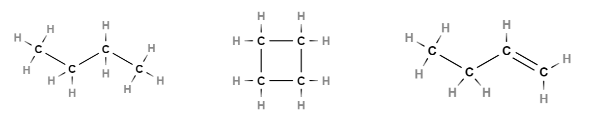
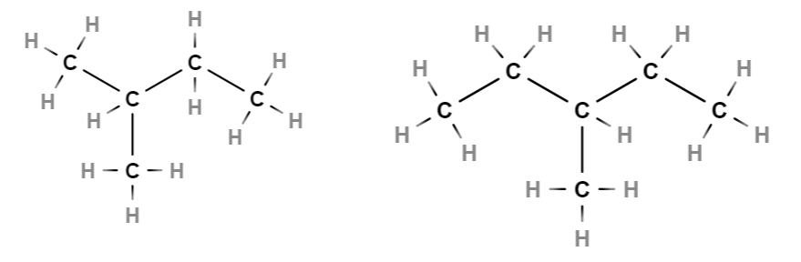
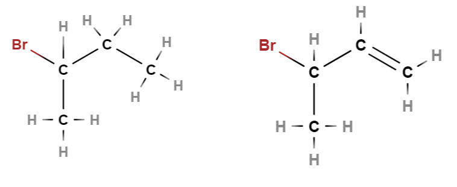

Luokittelu ja nimeäminen
Contents
Luokittelu ja nimeäminen#
Hiilivedyt ovat yksinkertaisimpia orgaanisia yhdisteitä, koska niissä on vain kahta alkuainetta, hiiltä ja vetyä. Kivihiili, öljy, bensiini ja maakaasu koostuvat pääasiassa hiilivedyistä. Hiilivetyjä käytetään myös kemianteollisuudessa prosessien raaka-aineina ja liuottimina.
Hiilivetyjä, joissa hiilien välillä on vain yksinkertaisia sidoksia, kutsutaan yleisesti nimellä alkaani. Jos molekyylissä on ainakin yksi kaksoissidos, se on yleisnimeltään alkeeni, ja jos siinä on ainakin yksi kolmoissidos, se on alkyyni.
Toinen tapa luokitella hiilivetyjä on seuraava:
tyydyttyneet hiilivedyt: molekyylissä on vain yksinkertaisia sidoksia
tyydyttymättömät: molekyylissä on ainakin yksi kaksois- tai kolmoissidos
Nimeäminen#
Hiilivetyjen nimen perusta on pisin yhtenäinen molekyylistä löytyvä hiiliketju. Jos ketju muodostaa renkaan, nimeen tulee etuliite syklo. Ketjun pituus määrää nimen alun seuraavan taulukon mukaisesti:
Hiilten määrä |
1 |
2 |
3 |
4 |
5 |
6 |
7 |
8 |
9 |
10 |
|---|---|---|---|---|---|---|---|---|---|---|
nimen etuliite |
met |
et |
prop |
but |
pent |
heks |
hept |
okt |
non |
dek |
Etuliitteen perään tulee pääte, joka kertoo sidostyypeistä:
Vain yksinkertaisin sidoksia (alkaanit): nimen pääte -aani
metaani CH4, etaani C2H6, propaani…
Yksi tai useampi kaksoissidos (alkeenit): nimen pääte -eeni
eteeni C2H4, propeeni C3H6, 1-buteeni tai 2-buteeni…
Yksi tai useampi kolmoissidos (alkyynit): nimen pääte -yyni
etyyni C2H2, propyyni C3H4…
Kaksois- tai kolmoissidoksen paikka ilmaistaan numerolla hiiliketjun siitä päädystä laskettuna, josta on lyhin matka sidokseen. Jos hiiliketjuun liittyy jokin halogeeni, senkin nimi ja paikka liitetään mukaan nimeen. Pisimmistä yhtenäisestä hiiliketjusta lähtevät lyhyemmät ketjut nimetään edellä olevan taulukon mukaisesti, mutta siten, että nimen loppuosa on -yyli. Ketjun sijainti ilmoitetaan numerolla.
Paikkojen numeroinnissa pyritään siihen, että numero olisi mahdollisimman pieni, joten paikan laskeminen aloitetaan siitä päästä molekyyliä, josta on lyhyempi matka numeroitavaan kohtaan – ei siis välttämättä vasemmalta oikealle. Yhdisteessä voi olla myös useampi kuin yksi asia, joiden paikka pitää ilmaista nimessä. Tällöin paikkanumeron voi upottaa nimen sisälle sopivaan kohtaan. Jos hiilirunko muodostaa renkaan, niin nimeen tulee etuliite syklo.
Esim. Nimeä seuraavat yhdisteet.

Ratkaisu
Yhdisteiden nimet ovat butaani, syklobutaani ja 1-buteeni.
Esim. Nimeä seuraavat yhdisteet.

Ratkaisu
Vasemmalla 2-metyylibutaani, oikealla 3-metyylipentaani.
Esim. Nimeä seuraavat yhdisteet.

Ratkaisu
Vasemmalla 2-bromibutaani, oikealla 3-bromi-but-1-eeni. Oikeanpuoleisessa kuvassa hiiliketjun numerointi on laskettu hiiliketjun oikeasta päästä, koska sieltä on lyhyempi matka kaksoissidokseen kuin vasemmasta päästä.